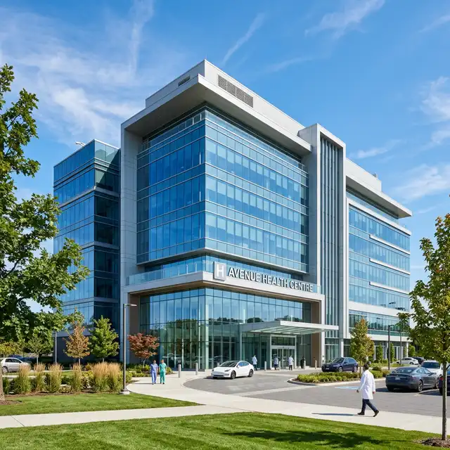
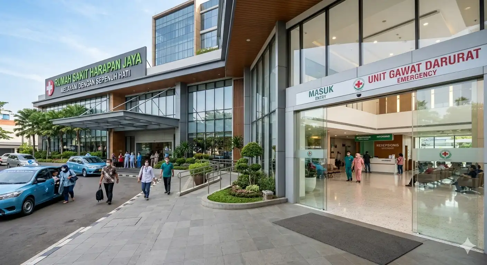
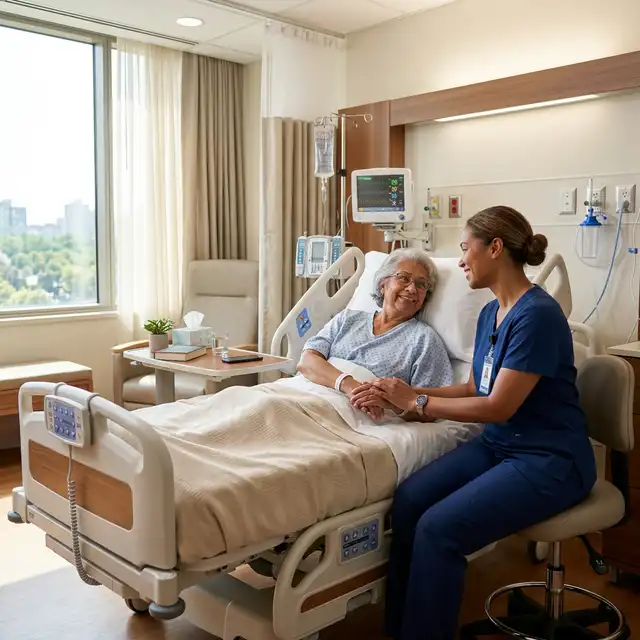
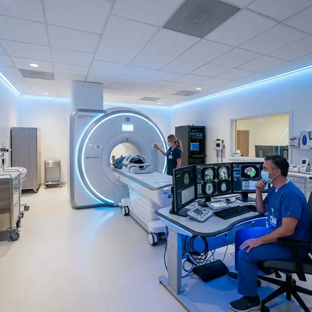

Layanan Darurat 24 Jam
+62 895-6390-68080
30K+
Pasien Ditangani
99%
Tingkat Kepuasan
Klinik Kesehatan Terpercaya
Pelayanan Medis Profesional & Modern Sejak 1990
Kami menghadirkan layanan kesehatan berkualitas dengan dukungan teknologi modern dan tenaga medis berpengalaman. Komitmen kami adalah memberikan perawatan terbaik dengan pendekatan yang humanis dan terpercaya.
35+
Tahun Pengalaman
120+
Dokter & Spesialis
15
Cabang Klinik
Layanan Kesehatan Terpercaya untuk Keluarga Anda
Kami menghadirkan pelayanan medis berkualitas dengan teknologi modern, tim dokter berpengalaman, serta pendampingan yang ramah dan profesional demi kenyamanan dan pemulihan pasien.
Standar Pelayanan Terakreditasi


Perawatan Berpusat pada Pasien
Setiap rencana perawatan disusun secara personal berdasarkan kondisi, kebutuhan, dan riwayat kesehatan pasien.
Pemeriksaan lengkap dengan alat diagnostik modern
Dokter umum & spesialis yang berpengalaman
Program pemulihan dan terapi berkelanjutan
Layanan darurat dan penanganan cepat 24/7
98%
Kepuasan Pasien
35K+
Pasien Terbantu
Layanan Unggulan Klinik
Rangkaian layanan prioritas dengan penanganan cepat, aman, dan ditangani oleh tenaga medis berpengalaman.
IGD & Tindakan Cepat
Layanan Darurat 24 Jam
Kami siap membantu kapan pun Anda membutuhkan. Tim kami menangani kondisi gawat darurat dengan triase cepat, peralatan lengkap, dan alur tindakan yang jelas untuk memastikan penanganan segera dan tepat.
Respon Cepat 24/7
Penanganan Kegawatdaruratan
Tim Medis Siaga & Terlatih

Kardiologi
Pemeriksaan kesehatan jantung, evaluasi risiko, dan penanganan keluhan seperti nyeri dada, hipertensi, hingga kontrol rutin.
15+
Spesialis
500+
Tindakan
Neurologi
Layanan saraf untuk keluhan pusing, migrain, kesemutan, gangguan tidur, hingga evaluasi kesehatan otak dan saraf.
8+
Spesialis
200+
Terapi
Bedah
Konsultasi bedah, tindakan minor, perawatan luka, serta rujukan dan pendampingan prosedur sesuai kebutuhan medis.
12+
Dokter Bedah
1000+
Operasi
Pediatri
Layanan kesehatan anak mulai dari imunisasi, tumbuh kembang, konsultasi nutrisi, hingga penanganan demam dan keluhan harian.
10+
Dokter Anak
2000+
Pasien Anak
Oftalmologi
Pemeriksaan mata menyeluruh, koreksi penglihatan, evaluasi mata kering, hingga skrining kesehatan mata berkala.
6+
Dokter Mata
800+
Pemeriksaan
Dermatologi
Perawatan kulit untuk jerawat, alergi, eksim, dan konsultasi kesehatan kulit dengan pendekatan medis yang aman dan tepat.
7+
Dokter Kulit
600+
Perawatan
Jelajahi Semua Layanan Medis Kami
Temukan layanan lengkap mulai dari konsultasi, pemeriksaan, tindakan, hingga program pemulihan—dengan alur yang mudah, transparan, dan mengutamakan kenyamanan pasien.
Lihat Semua LayananLayanan Unggulan
Pilihan layanan terbaik kami untuk membantu pemeriksaan, perawatan, dan pemulihan dengan cepat dan nyaman.

Layanan Jantung Terpadu
Pemeriksaan kesehatan jantung, kontrol tekanan darah, evaluasi risiko, serta konsultasi keluhan nyeri dada dan sesak.

Klinik Saraf
Konsultasi pusing, migrain, kesemutan, gangguan tidur, hingga evaluasi saraf dengan penanganan yang tepat.

Ortopedi & Cedera
Penanganan nyeri sendi, keseleo, cedera olahraga, pemulihan pasca cedera, serta konsultasi tulang dan otot.

Klinik Anak
Pemeriksaan tumbuh kembang, imunisasi, konsultasi nutrisi, serta penanganan demam, batuk, pilek, dan alergi.

Konsultasi Penyakit Dalam
Evaluasi keluhan kronis, kontrol gula darah dan kolesterol, pemeriksaan rutin, serta rencana perawatan jangka panjang.

Laboratorium & Medical Check-Up
Beragam tes lab untuk skrining dan monitoring kesehatan, termasuk paket MCU dengan hasil cepat dan akurat.
Perawatan Terbaik untuk Setiap Langkah Pemulihan Anda
Dapatkan layanan kesehatan yang lengkap dengan pendekatan yang ramah dan profesional. Tim medis kami siap memberikan penanganan yang personal, jelas, dan mengutamakan kenyamanan Anda.

25+
Tahun Pengalaman
15K+
Pasien Puas
50+
Tenaga Medis
24/7
Layanan Darurat
Klinik Jantung
Pemeriksaan dan konsultasi kesehatan jantung dengan dukungan alat diagnostik modern serta dokter yang berpengalaman untuk menjaga kesehatan jantung Anda.
Klinik Saraf
Layanan saraf yang komprehensif untuk diagnosis dan penanganan keluhan otak, tulang belakang, serta sistem saraf secara tepat dan terarah.
Perawatan Preventif
Skrining kesehatan dan program kebugaran untuk mendeteksi risiko lebih awal, mencegah penyakit, dan membantu Anda menjaga kondisi tubuh tetap optimal.